Stateflow hysteresis control, corrected powertrain geometry, shaft-power fuel accounting, and parameter sweep optimization.
Version 8 represents a major accuracy overhaul across three independent subsystems. While V6 introduced the burn-coast control philosophy, several fundamental modeling errors were identified and corrected in V8 that significantly affect simulation fidelity and fuel predictions.
The most impactful corrections were a wheel radius error that had been halving the engine RPM throughout the powertrain, a driver strategy that lacked an upper speed cutoff causing the engine to run continuously, and an energy model that was computing fuel consumption from net vehicle force rather than engine shaft power. Each of these issues independently produced incorrect results — together they made quantitative fuel predictions unreliable.
V8 also introduces the first full parameter sweep with Shell competition scoring (km/L), producing actionable design sensitivity rankings for the engineering team.
r_w was set to
0.508 m (the wheel diameter) instead of 0.254 m (the radius). This
caused engine RPM to be calculated at half the true value throughout
the simulation, pushing the operating point below the valid engine map
range and returning NaN torque values.
RPM_idle was
set to 1800 RPM, below the engine map minimum of 2708 RPM. Updated to
match the dyno map lower bound so the RPM saturation block keeps the
engine within the valid lookup table range.
v_low_on), meaning the engine had no upper cutoff and
ran continuously past the target speed. A Stateflow state machine
replaces the comparator-switch logic with a proper two-state
hysteresis controller. The engine burns when velocity drops below
v_low_on and coasts when velocity exceeds
v_high_on, holding its previous state in between to
prevent chattering.
F_net × v, which is net
mechanical power after drag and rolling losses have already been
subtracted. This underestimates fuel input because it starts from the
wrong quantity. The corrected path integrates engine shaft power
(T_engine × ω_engine), then divides by engine efficiency
and fuel LHV to produce fuel mass in kg.
The V6 driver strategy used a single comparator feeding a switch block. While this produced on/off throttle behavior, it only checked one threshold — the lower bound. Without an upper bound comparator, the engine continued to run past the target speed with no cutoff, producing a continuous burn rather than a true burn-coast cycle.
v_low_on) implementedv_actual ≥ v_high_onv_actual ≤ v_low_on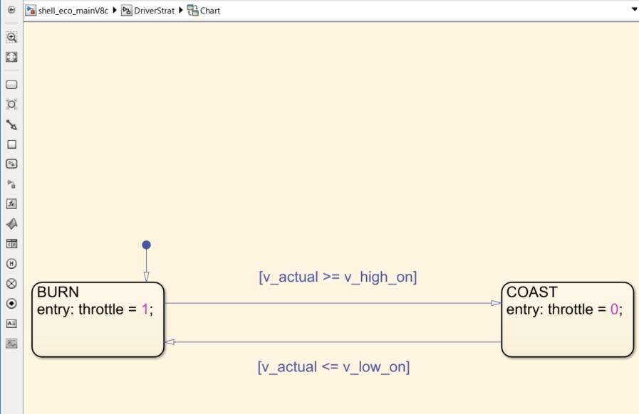
Stateflow State Machine — V8 DriverStrat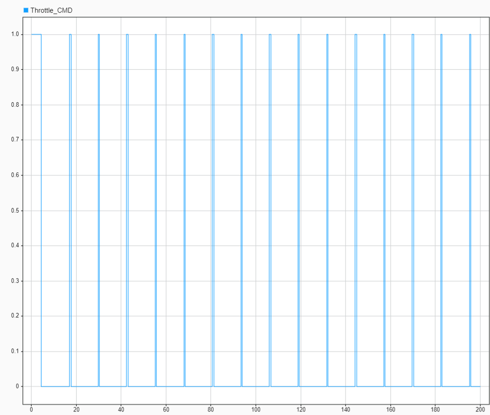
Throttle Command — Clean square wave with correct upper cutoff
With the corrected wheel radius and Stateflow upper cutoff, the velocity
profile now behaves physically correctly. The vehicle accelerates during
burn, peaks at v_high_on, then decelerates along an
exponential decay curve during coast — driven by drag (proportional to
v²) and rolling resistance. A linear coast would indicate the resistive
forces are too weak relative to inertia.
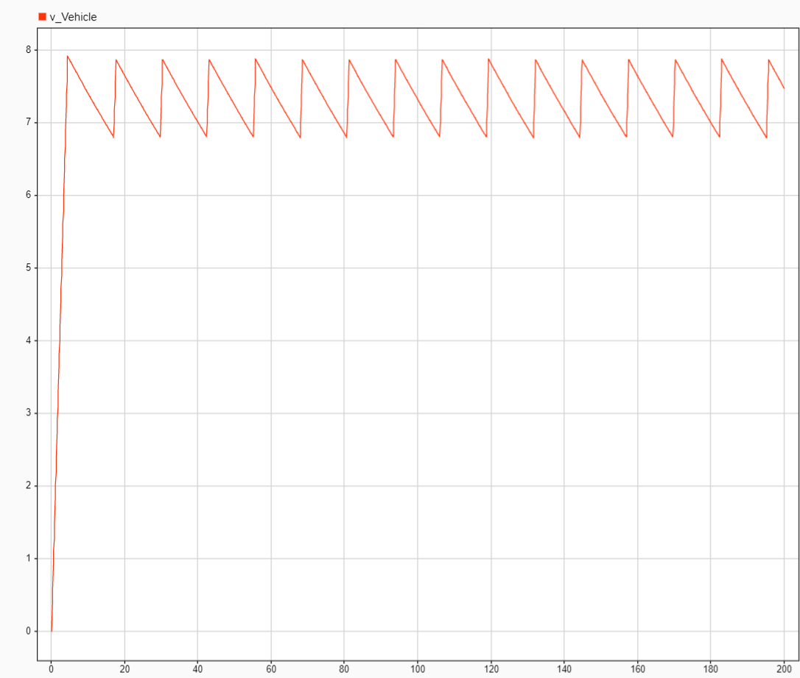
Velocity vs Time — Correct oscillation between v_low_on and v_high_on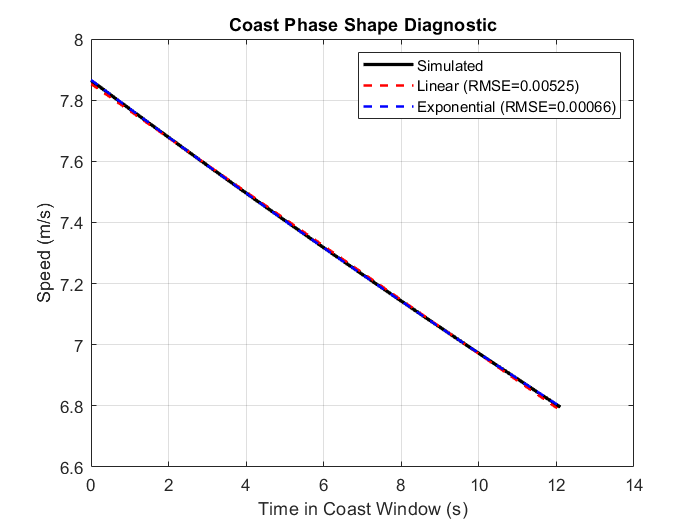
Coast Shape Diagnostic — Exponential fit confirms correct physics
The V6 EnergyModeling subsystem calculated fuel from net vehicle power
(F_net × v). This is the power remaining after drag and
rolling resistance have already been subtracted from engine output —
it does not represent fuel energy input to the engine. Dividing this
quantity by engine efficiency and LHV produces an underestimate of fuel
consumption because losses have already been removed before the
calculation begins.
V8 rebuilds EnergyModeling with two parallel independent paths:
F_net × v → integrate → E_mech (J) → ÷ x_Vehicle → η (J/m)
Tracks net mechanical work done on the vehicle. Used as the J/m efficiency metric and for internal validation.
T_engine × ω_engine → clamp(0,∞) → integrate → ÷ effic_engine → ÷ LHV → m_fuel (kg)
Integrates engine shaft power, then divides by thermal efficiency and fuel heating value to produce fuel mass consumed. The zero clamp prevents numerical noise during coast phases from creating negative fuel consumption.
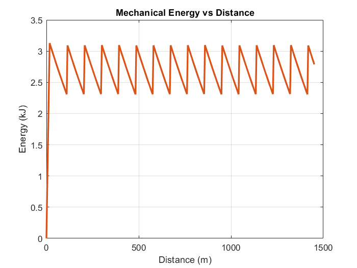
Mechanical Energy vs Distance — Linear growth confirms consistent cycle behavior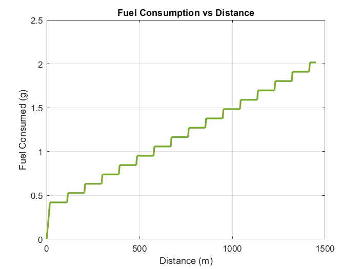
Fuel Consumed vs Distance — Stepped profile shows fuel burned only during burn phases
Standard run parameters: v_low=6.5, v_high=7.5, G=10, m=100kg,
Cd=0.30, t_end=200s
SweepV8b evaluated four design parameters independently across a 1000s simulation window. The middle 80% of each run was used to compute metrics, eliminating startup transients and incomplete end-cycles that previously corrupted efficiency comparisons between parameter values. All results reported in km/L to match Shell Eco-Marathon scoring.
A 2D sweep of v_low (5.5–7.5 m/s) vs v_high
(7.0–9.5 m/s) was run to find the optimal speed band. Wider bands
result in fewer engine cycles per unit distance, keeping the engine
closer to its peak efficiency operating point for longer burn durations.
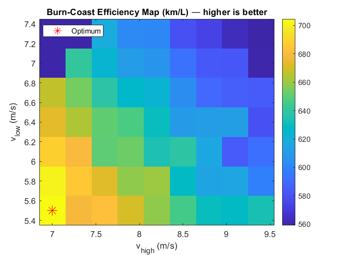
Speed Band Efficiency Map (km/L) — optimum at v_low=5.5, v_high=7.0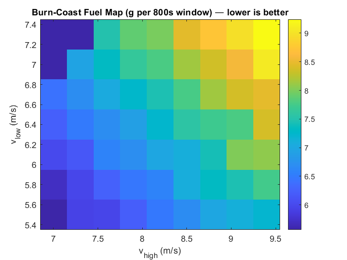
Speed Band Fuel Map (g) — wider band consistently reduces fuelGear ratio was swept from G=7 to G=14 in 0.25 increments. The km/L variation across this entire range was only ±3.3%, confirming that gear ratio has minimal effect on efficiency in this model — the engine torque map is relatively flat across the RPM range tested. The practical gear ratio constraint is keeping engine RPM within the valid dyno map range (2708–8708 RPM) at operating speed. G = 10.25–11.50 satisfies this constraint at v_target = 7 m/s.
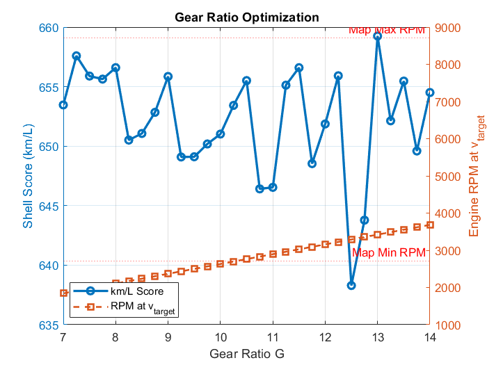
Gear Ratio Sweep — km/L (left) and engine RPM at v_target (right). Red lines mark valid map RPM bounds.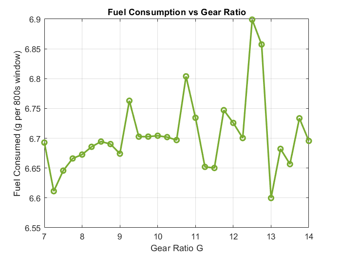
Gear Ratio vs Fuel — minimal variation confirms low design sensitivityMass was swept from 80 kg to 200 kg in 10 kg increments. The relationship is smooth and monotonic — every 10 kg of additional mass costs approximately 30–40 km/L. Rolling resistance scales directly with mass, and heavier vehicles require more frequent and longer burn cycles to maintain speed through the coast band.
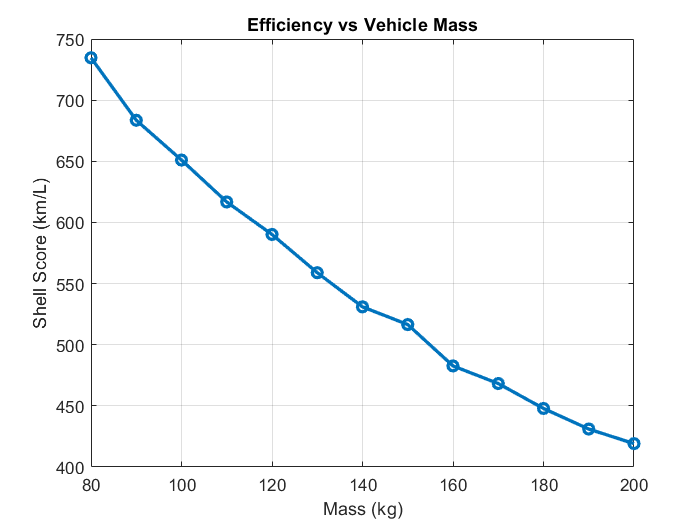
Mass vs Shell Score — monotonic penalty, 80kg gives 735 km/L vs 419 km/L at 200kg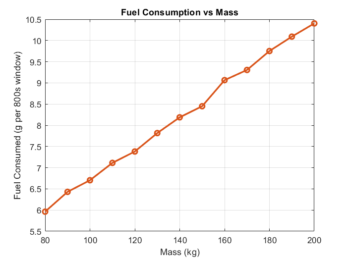
Mass vs Fuel — near-linear relationship confirms rolling resistance dominanceDrag coefficient was swept from Cd=0.10 to Cd=0.50. At the vehicle's operating speed of ~7 m/s, aerodynamic drag force is moderate relative to rolling resistance, but its quadratic dependence on velocity means wider speed bands amplify its effect. Reducing Cd from 0.50 to 0.10 nearly doubles the Shell score from 500 to 933 km/L.
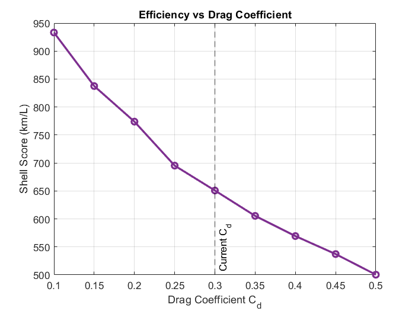
Cd vs Shell Score — near-linear improvement with reduced drag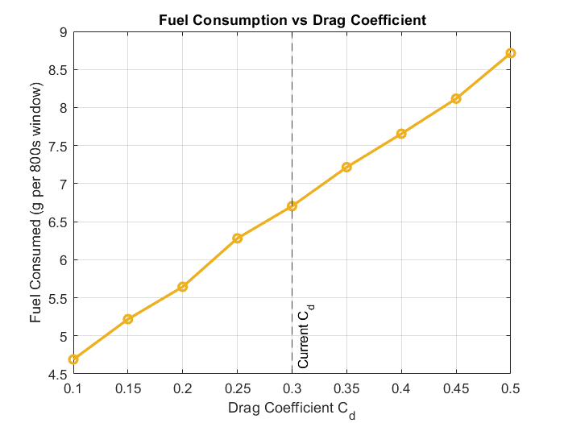
Cd vs Fuel — smooth monotonic relationship confirms no cycle timing artifactsThe sensitivity metric measures the percentage improvement from the worst to the best value within each sweep range — a higher value means that parameter has more leverage on competition score and deserves higher design priority.
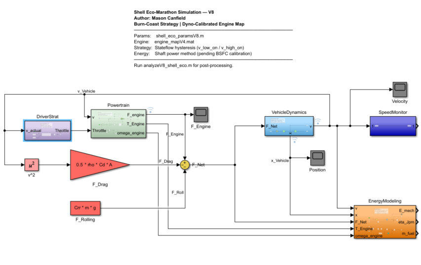
Full System Overview — DriverStrat, Powertrain, VehicleDynamics, EnergyModeling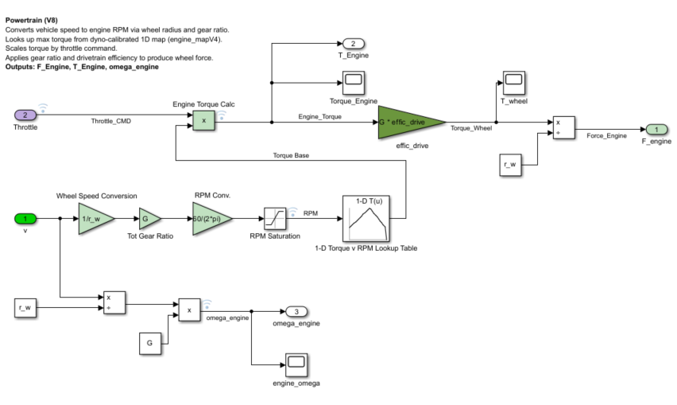
Powertrain Subsystem — torque map lookup, gear ratio, drivetrain efficiency
Representative output from analyzeV8_shell_eco.m and
SweepV8b.m after a standard 200s baseline run followed
by the full four-parameter sweep.
=== Shell Eco Run Results (V8) === Distance: 1451.1 m Energy (mech): 2.8 kJ Fuel consumed: 0.0020 kg Fuel consumed: 2.02 g Avg Speed: 7.23 m/s Max Speed: 7.91 m/s Energy per meter: 1.9215 J/m Live eta (final): 1.9215 J/m Shell Score: 536.1 km/L --- Force Balance at 7.0 m/s --- F_drag: 3.59 N F_roll: 4.91 N F_resist total: 8.49 N Coast decel: -0.0849 m/s^2 Coast band time (7.8 to 6.8 m/s): 11.8 s F_Engine check: CLEAN — no leakage during coast --- Coast Shape Fit --- Linear RMSE: 0.00525 m/s Exponential RMSE: 0.00066 m/s Result: CURVED (exponential) — physics correct
Running Sweep 1: Burn-Coast Speed Band... v_low = 5.5 complete v_low = 5.8 complete v_low = 6.1 complete v_low = 6.4 complete v_low = 6.7 complete v_low = 7.0 complete v_low = 7.3 complete Sweep 1 optimum: v_low=5.5, v_high=7.0 → 704.5 km/L Running Sweep 2: Gear Ratio... G=7.00 → RPM=1842, 653.5 km/L, 6.693 g G=7.25 → RPM=1908, 657.6 km/L, 6.611 g G=7.50 → RPM=1974, 655.9 km/L, 6.646 g G=7.75 → RPM=2040, 655.6 km/L, 6.666 g G=8.00 → RPM=2105, 656.6 km/L, 6.673 g G=8.25 → RPM=2171, 650.5 km/L, 6.686 g G=8.50 → RPM=2237, 651.1 km/L, 6.695 g G=8.75 → RPM=2303, 652.8 km/L, 6.690 g G=9.00 → RPM=2369, 655.9 km/L, 6.674 g G=9.25 → RPM=2434, 649.1 km/L, 6.763 g G=9.50 → RPM=2500, 649.1 km/L, 6.703 g G=9.75 → RPM=2566, 650.2 km/L, 6.703 g G=10.00 → RPM=2632, 651.0 km/L, 6.704 g G=10.25 → RPM=2697, 653.4 km/L, 6.702 g G=10.50 → RPM=2763, 655.5 km/L, 6.697 g G=10.75 → RPM=2829, 646.4 km/L, 6.804 g G=11.00 → RPM=2895, 646.5 km/L, 6.734 g G=11.25 → RPM=2961, 655.1 km/L, 6.652 g G=11.50 → RPM=3026, 656.6 km/L, 6.650 g G=11.75 → RPM=3092, 648.5 km/L, 6.747 g G=12.00 → RPM=3158, 651.9 km/L, 6.726 g G=12.25 → RPM=3224, 655.9 km/L, 6.700 g G=12.50 → RPM=3290, 638.3 km/L, 6.899 g G=12.75 → RPM=3355, 643.8 km/L, 6.857 g G=13.00 → RPM=3421, 659.3 km/L, 6.600 g G=13.25 → RPM=3487, 652.1 km/L, 6.682 g G=13.50 → RPM=3553, 655.5 km/L, 6.657 g G=13.75 → RPM=3619, 649.6 km/L, 6.734 g G=14.00 → RPM=3684, 654.5 km/L, 6.696 g Running Sweep 3: Mass... m=80 kg → 734.7 km/L, 5.963 g m=90 kg → 683.6 km/L, 6.430 g m=100 kg → 651.0 km/L, 6.704 g m=110 kg → 616.7 km/L, 7.113 g m=120 kg → 590.2 km/L, 7.382 g m=130 kg → 558.9 km/L, 7.816 g m=140 kg → 531.0 km/L, 8.188 g m=150 kg → 516.5 km/L, 8.450 g m=160 kg → 482.7 km/L, 9.065 g m=170 kg → 468.3 km/L, 9.305 g m=180 kg → 447.9 km/L, 9.752 g m=190 kg → 431.0 km/L, 10.092 g m=200 kg → 419.1 km/L, 10.403 g Running Sweep 4: Drag Coefficient... Cd=0.10 → 933.2 km/L, 4.689 g Cd=0.15 → 837.5 km/L, 5.219 g Cd=0.20 → 773.9 km/L, 5.644 g Cd=0.25 → 695.3 km/L, 6.281 g Cd=0.30 → 650.8 km/L, 6.704 g Cd=0.35 → 605.4 km/L, 7.216 g Cd=0.40 → 569.3 km/L, 7.656 g Cd=0.45 → 537.2 km/L, 8.116 g Cd=0.50 → 500.3 km/L, 8.715 g ============ Sweep Summary (V8b) ============ Metric: km/L (Shell scoring) — higher is better --------------------------------------------- Sweep 1 — Speed band: v_low=5.5, v_high=7.0 → 704.5 km/L Sweep 2 — Gear ratio: G=13.00 (RPM=3421) → 659.3 km/L Sweep 3 — Mass: m=80 kg → 734.7 km/L Sweep 4 — Drag coeff: Cd=0.10 → 933.2 km/L ============================================= --- Parameter Sensitivity (best vs worst in sweep range) --- Speed band: 26.0% improvement potential Gear ratio: 3.3% improvement potential Mass: 75.3% improvement potential Drag coeff: 86.5% improvement potential ------------------------------------------------------------ Ranking: higher % = higher design priority
The V8 workflow consists of three modular scripts and an updated parameter file. Each script is independently runnable after loading the parameter file and completing a simulation run.